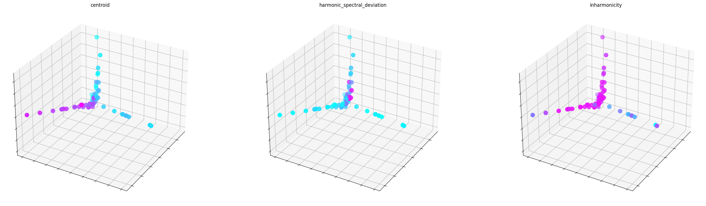
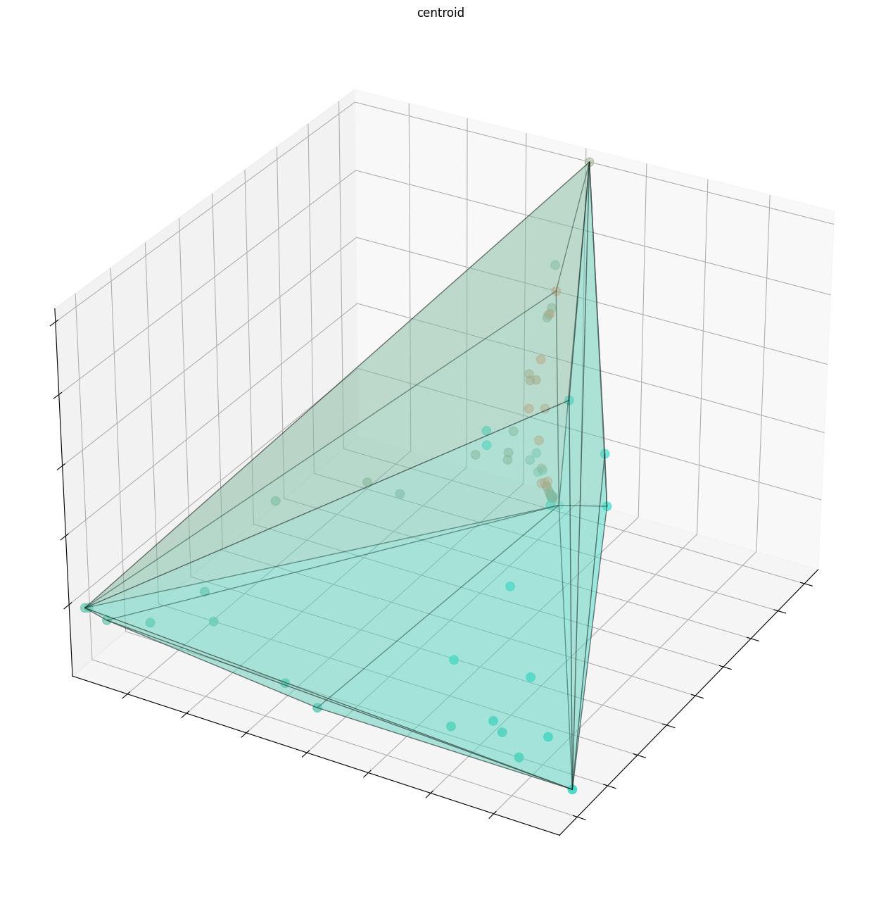
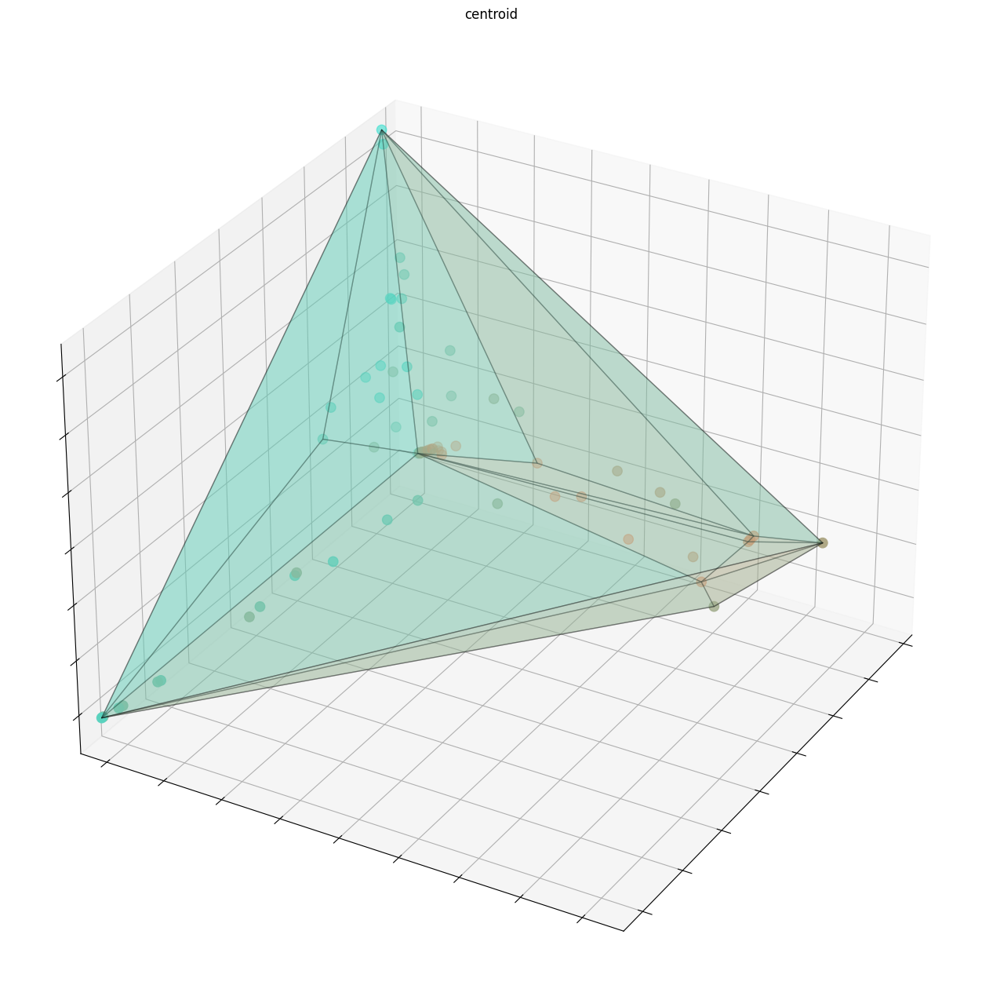
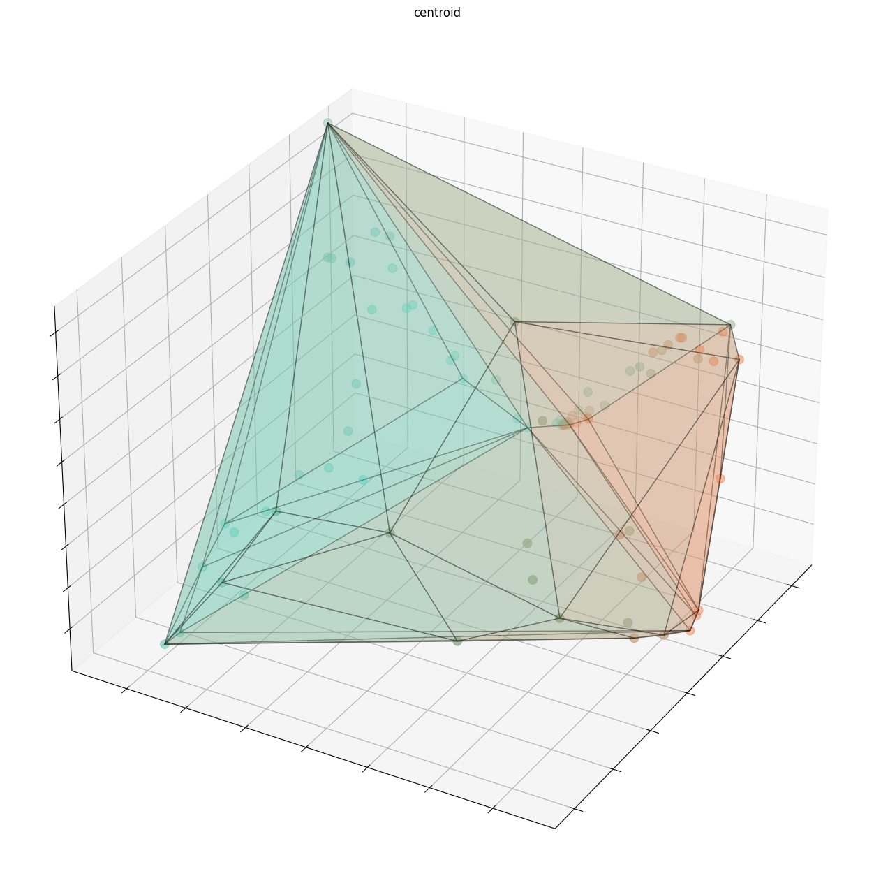

An Acousmatic Approach to Neural Audio Synthesis
Acousmatic Sound and The Sound Object
Modeling The Sound Object's Morphology
Modeling The Sound Object's Typology
Experiments
Acousmatic Control Parameters
Acousmatic Dataset Construction
Independent Models
| Sound Example |
Description |
|
|
Class A: Tom with spring coil |
|
|
Class B: Tom played with threaded rod |
|
|
Class C:Tom played with miniature styrofoam |
Spectral audio descriptors for each sound class most correlated to each dimension
of the JTFS isomap
"Acousmatic" Model
Acousmatic model distribution

| JTFS Isomap Dimension |
1st Most Correlated Feature |
2nd Most Correlated Feature |
3rd Most Correlated Feature |
| X |
Centroid |
Slope |
Crest |
| Y |
Harmonic Spectral Deviation |
Flatness |
Slope |
| Z |
Inharmonicity |
Harmonic Spectral Deviation |
Noisiness |
| Principal Component |
Explained Variance |
| Centroid |
0.654 |
| Slope |
0.223 |
| Flatness |
0.068 |
| Crest |
0.036 |
| Noisiness |
0.009 |
| Inharmonicity |
0.007 |
| Harmonic Spectral Deviation |
6.504e-15 |
Results
Extrapolation
| Model |
Total L1 Distance between Sound Objects |
Total L2 Distance between Sound Objects |
Convex Hull Volume |
| Baseline |
0.4937 |
0.3541 |
0.0675 |
| "Acousmatic" |
0.4479 |
0.3170 |
0.0786 |



Reconstructions
Acousmatic Reconstruction
Acousmatic Reconstruction
Acousmatic Reconstruction
Acousmatic Timbre Transfer
Violin Improvisation (Original)
Violin Improvisation (Timbre Transfer)
Skipping Rocks (Original)
Skipping Rocks (Timbre Transfer)
Acknowledgements
@article{yourcitation,
author = {Author Name},
title = {Title of the Work},
journal = {Journal Name},
year = {Year},
}
Citations
(IEEE citations)